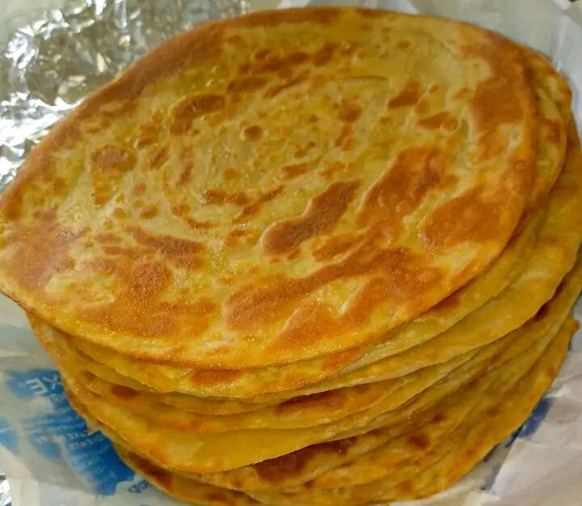

How to Make Chapati!

CHAPATI
Chapati is one of the key and most sought after dishes in Kenya. A common meal in all urban and rural areas, you will find it in hotels of all stars including roaside kiosks. Head over to any Occasion, traditional or religious and you'll never fail to get this popular dish.
It is easy to make (once youget the hang of it) and can be had at any meal; breakfast, lunch, chai ya saa kumi and dinner. You can mix it with literally anything: meat stew, tea, even eggs.
Ingredients
Behold: a list of ingredients used to make chapatis:
- 5 cups (600gms)
- 3 cups of water
- 1 tsp. (5g) of white sugar
- half teaspoon of salt
- 1 cup of cooking oil
Directions
- Measure flour,salt, sugar, cooking oil and water into separate bowls.
- Mix the dry ingredients; flour, sugar and salt.
- Warm all the water and add in the dry ingredients mixture
- Knead the mixture to soft dough for 6 minutes.
- Set the dough aside and cover for 16 minutes before use.
- Place cast iton pan over the fire and heat.
- Dust the working surface lighty with flour and start rolling the dough to desired thickness.
- Apply 1/4 cup oil on top, cut into strips and roll strips into balls of desired size.
- Cover with cling film or a clean kitchen towel and let the dough rest.
- Roll each ball on a lightly floured work surface into a disk shape.
- Cook each chapati on the pan one at a time until lightly browned on both sides.
- Lightly oil each side and turn before removing it from the heat. Repeat for all the chapatis.
- Stack upthe chapatis as you remove them from the pan. keep covered.
- Serve when hot.